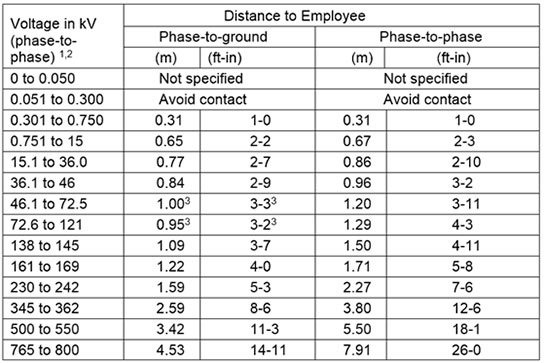

11.I Power Transmission and Distribution
11.I.01–11.I.04
11.I.01 The requirements in this subsection shall apply to the erection of new electric transmission and distribution lines and equipment, and the alteration, conversion, and improvement of existing electric transmission and distribution lines and equipment.
11.I.02 Before starting work, existing conditions shall be evaluated and determined. Such conditions shall include, but not be limited to, location and voltage of energized lines and equipment, conditions of poles, and location of circuits and equipment including power and communication lines and fire alarm circuits.
- Electric equipment and lines shall be considered energized until determined to be de-energized by tests, or other means, and grounds applied.
- New lines or equipment may be considered de-energized and worked as such where the lines or equipment are grounded or where the hazard of induced voltages is not present and adequate clearances or other means are implemented to prevent contact with energized lines or equipment.
- The operating voltage of equipment and lines shall be determined before working on or near energized parts.
11.I.03 Clearance requirements of either subparagraph a or b below shall be observed.
- No QP shall be permitted to approach or take any conductive object without an approved insulating handle closer to exposed energized parts than shown in Table 11-3 (phase to ground) unless:
- The QP is insulated or guarded from the energized part (gloves or gloves with sleeves rated for the voltage involved shall be considered insulation of the QP from the energized part);
- The energized part is insulated or guarded from the QP and any other conductive object at a different potential; or
- The QP is isolated, insulated, or guarded from any other conductive object(s), as during live-line, bare-hand work.
- The minimum phase to ground working distance and minimum clear hot stick distances in Table 11-3 shall not be exceeded. The minimum clear hot stick distance refers to the distance from the hot end of live-line tools to the lineman when performing live-line work. Conductor support tools (such as link sticks, strain carriers, and insulator cradles) may be used provided the clear length of insulation is at least as long as the insulator string or as long as the minimum phase to ground distance in Table 11-3.
11.I.04 When de-energizing lines and equipment operated in excess of 600 volts, and the means of disconnecting from electric energy is not visibly open or visibly locked and tagged out, provisions a through g below are required. > In addition, requirements in Section 12 apply.
- The equipment or section of line to be de-energized shall be clearly identified and shall be isolated from all sources of voltage.
- Notification and assurance from the GDA shall be obtained that:
- All switches and disconnects through which electric energy may be supplied to the particular section of line or equipment to be worked have been de-energized;
- All switches and disconnects are plainly tagged and/or locked indicating that persons are at work; and
- All switches and disconnects capable of being rendered inoperable are rendered inoperable.
- After all designated switches and disconnects have been opened, rendered inoperable, and tagged and/or locked, visual inspections shall be conducted to ensure that equipment or lines are de-energized.
- Protective grounds shall be applied on the disconnected equipment or lines to be worked on. > See Section 11.I.07.
TABLE 11-3
AC Live Work Minimum Approach Distance
Reference 29 CFR 1910.269(L)(10), Table R-6

1 For single-phase systems use the highest voltage available.
2 For single-phase lines off three phase systems, use phase-to-phase voltage of the system.
3 The 46.1 to 72.5 kV phase-to-ground 3-3 (ft-in) distance contains a 1-3 (ft-in) electrical component and a 2-0 (ft-in) inadvertent movement component while the 72.6 to 121 kV phase-to-ground 3-2 (ft-in) distance contains a 2-0 (ft-in) electrical component and a 1-0 (ft-in) inadvertent movement component.
- Guards or barriers shall be erected as necessary to adjacent energized lines.
- When more than one crew requires the same line or equipment to be de-energized, a prominent tag and lock for each crew shall be placed on the line or equipment by the Authorized Individual(s) holding the clearance(s) on said equipment or line.
- Upon completion of work on de-energized lines or equipment, each Authorized Individual holding a clearance shall determine that all employees in the crew are clear and request a release of the clearance. The protective grounds installed will be removed. Authorized Individual will report to the GDA that all tags and locks protecting the crew may be removed.
{kind=link}